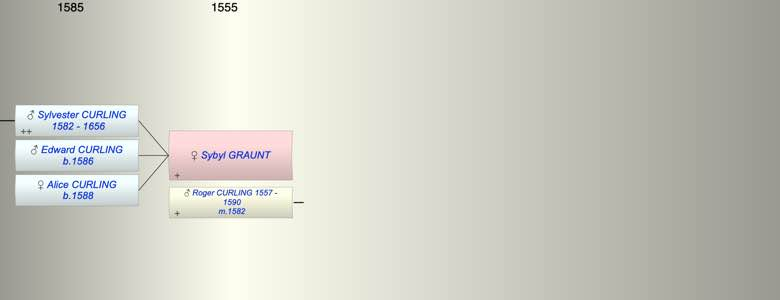

| [Index] |
| Sybyl GRAUNT |
|  |
| m. 15 Oct 1582 Roger CURLING (1557 - 1590) |
| Children (3): |
| Sylvester CURLING (1582 - 1656) |
| Edward CURLING (1586 - ) |
| Alice CURLING (1588 - ) |
| Grandchildren (2): |
| Michael CURLING (1608 - 1685), Robert CURLING (1615 - ) |
| Events in Sybyl GRAUNT's life | |||||
| Date | Age | Event | Place | Notes | Src |
| 1582 | Birth of son Sylvester CURLING | St Peter, Thanet | Note 1 | ||
| 15 Oct 1582 | Married Roger CURLING (aged 25) | St Peter in Thanet ex FMP PR | |||
| 1586 | Birth of son Edward CURLING | St John in Thanet | Note 2 | ||
| 1588 | Birth of daughter Alice CURLING | St John in Thanet | Note 3 | ||
| 1590 | Death of husband Roger CURLING (aged 33) | St Lawrence | Note 4 | ||
| 1656 | Death of son Sylvester CURLING (aged 74) | St Lawrence | Note 5 | ||
| Created on a Mac™ using iFamily for Mac™ on 8 Oct 2023 |